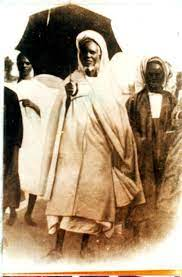
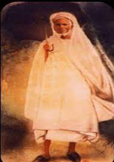

-
1865 : A l'age de 10 ans ,il fut amené par son oncle paternelle Amadou Sy
Dans le Djolof;à Sine,prés de sagata,le village de sa
famille paternelle .Revenue à Gaya.il ira suivre des cours auprés de Ngagne Ka,maitre d'école Wolof pendant pusieur
mois et à Thiaré ,dans le cercle de Matam ,auprés de Mor Bassine Sarr ,puis il alla chez le marabout Abdou Biteye à
Lougué (dans le cercle de Saldé) et chez Mamadou Top à Podor y achever l'étude du Saint-Coran.
-
1872 : Malick avait dix-sept(17)ans quand il reçut le Wird Tidiane et la capacitation(IJAZA) de son oncle maternel Alfahim Mayoro wélé
-
1872: Il silonna le pays de long en large, d'Est à l'Ouest. Une quetes obstinées dura vingt(20) longues années.
lui permit d'assesoir des solides connaissances dans touts les domaines des sciences islamiquesne ,religieuses
et mème profanes (Mathématique,Astronomie,Prosodie,
Poésie,Géographie...), il étudiait en enseigner en meme temps
à fouta, il a étudié hilmoul-flak(Astronomie)et hadith
à Ndiambour "Fikh" et "Lougha"
ndar "Lougha" ,kadior en 188 il a fini tout ses études soupérieur

Maodo
-
1988 : Il alla à la Mecque pour la première fois.
Il revient à la Mecque avec le titre de Khalife de la Tidjaniya pour le Sénégal.
Il fut beaucoup aidé par les groupements omariens, eux-mêmes tidjanes.
Malick Sy fit une propagande discrète, surtout centrée sur la diffusion de la confrérie dans les centres urbains,
avec la construction de mosquées et de daaras – écoles d'enseignement islamique –, au Waalo, Cayor, Fouta, Djolof, Sine-Saloum.
En Afrique subsaharienne, Malick Sy a beaucoup contribué à la propagation de l'islam et de la confrérie soufie fondée par Ahmed Tijani.
Fin lettré, il est l'auteur de plusieurs ouvrages dont Qilâsu thahab, « l'or décanté »
-
1891 Il installa à Ndiarndé suivant la suggestion de son beau père Mor Massamba Diery Dieng.l'année où il fete pour la première fois le < Le Maouloud > (dit "Gamou" la naissance du Prophète Mouhamed(psl))
avec son frère paternelle Abdou Boly Fall,Mbeur Sy,Mor Binta Sy
-
1892 à 1894 : à Ndar avec Rawane Ngom ils partageaient le Saint-Coran pendant la nuit chaqu'un avec un moitié
il vient à pour Tafsir-Al-Quran(Traduction du Saint-Coran) Tivaouane avec les commerçant comme Djibril gueye,Ablaye Gueye,Djibril Top...
-
1895 : à Ndiarndé avec Mame Major,Mame Rawane Ngom,Djibril Gueye,Djibril Top,Magueye Ndiaye,Ablaye Gueye ...
-
1900 : il fete le Gamou à Tivaouane pour la première fois
-
1902 : Il fète le Gamou officièllement pour la prmière fois suivant la suggestion de certains de ses fidèles.
le meme années où il fait la pose du premiére pierre de la grande mosquée de Tivaouane avec un budjet de 190FCFA ,il l'inaugra Deux (2)ans aprés

Ndiol Fama
-
1922 - Malick Sy s'éteignit le 27 juin 1922 à Tivaouane où il fut inhumé. Son mausolée fait l'objet de nombreuses visites, appelées ziar, de la part des nombreux disciples venus s'y ressourcer, surtout en période de Gamou où la ville de Tivaouane connaît une très forte affluence.